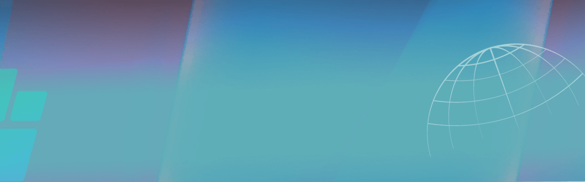
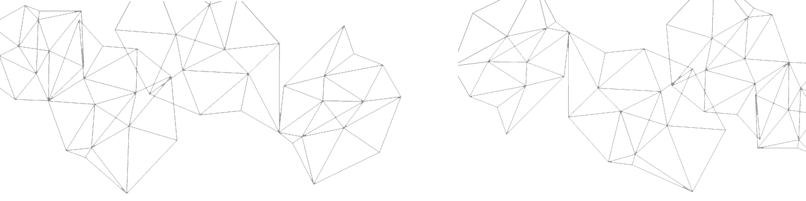
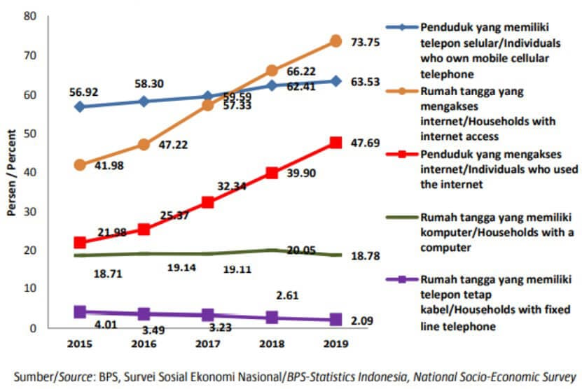
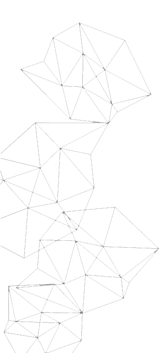

i-med


Perkembangan Indikator TIK di Indonesia
( 2015 - 2019 )

Rumah yang memiliki minimal satu nomor telepon seluler
Rumah yang memiliki telfon tetap kabel


Apa yang Perlu Dipersiapkan
Security Data
Apa Pengaruh Era Digital ? ?